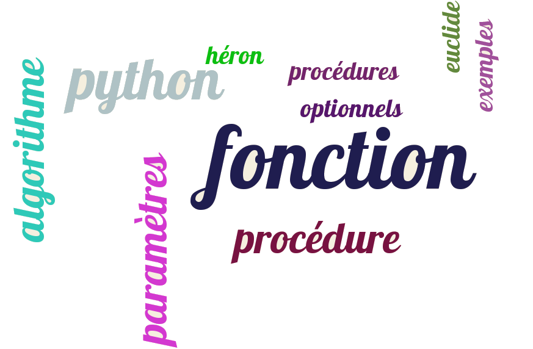
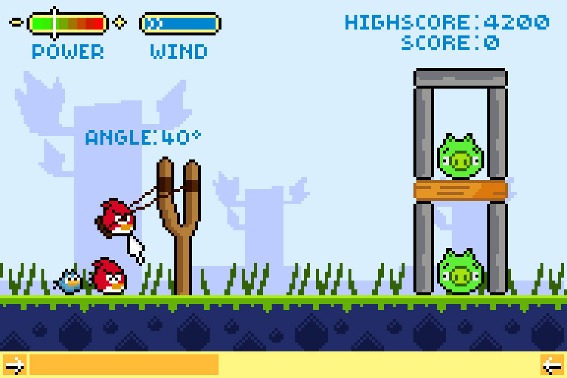

Fonctions et procédures
Contenu
5. Fonctions et procédures¶
{kind=link}
%matplotlib inline
import numpy as np
from IPython.display import HTML,display,IFrame,Video
from IPython.display import YouTubeVideo,Markdown
display(Markdown("**Video du cours: Introduction**"))
YouTubeVideo('Q_yFr7sdyc0')
Video du cours: Introduction
Astuce
pour tester les programmes Python, vous pouvez vous connectez sur un serveur Jupyter, par exemple, pour les étudiants Lyon1 https://jupyter.mecanique.univ-lyon1.fr
5.1. Procédure et fonction¶
5.1.1. Procédure¶
procédure: algorithme avec des paramètres d’entrée (données) et des paramètres de sortie (résultat)
Algorithme MaFonction(liste de paramètres)
variables locales
instructions
retour (liste de valeurs)
# utilisation
val = MaFonction(param1,param2,..)
display(Markdown("**Video du cours: procédure et fonction**"))
YouTubeVideo('CAsiebHnHAs')
Video du cours: procédure et fonction
5.1.2. Fonction en Python¶
implémentation d’une procédure = function (C, Python) , subroutine (Fortran)
# définition
def MaFonction(liste arguments):
instructions
....
return (liste de valeurs)
# utilisation
(val1, val2, ..) = MaFonction(arg1, arg2, ...)
5.1.3. Passage des arguments¶
on affecte aux arguments de la fonction la valeur des paramètres d’appel:
def MaFonction(a1, a2, a3):
....
return (v1, v2)
(V1, V2) = MaFonction(A1, A2, A3)
lors de l’appel, on a a1=A1 a2=A2 a3=A3
valeur de retour = liste
lors du retour, V1=v1, V2=v2
Exemple Python
utilisation du site : http://pythontutor.com
vous pouvez copier l’exemple de code python sur le site pour l’exécuter
# definition
def MaFonc(a1,a2,a3):
v1 = a1 + a3
v2 = a2 + a3
return v1,v2
# utilisation
A1 = 1.0
V1,V2 = mafonc(A1,a.2,4*A1)
display(Markdown("**Visualisation de l'execution sur le site pythontutor**"))
Video("VIDEO_COURS/pythonlive_fonc1.mp4", embed=True,width=700, height=300)
Visualisation de l'execution sur le site pythontutor
5.1.4. Passage des arguments¶
pour les variables scalaires: valeur = valeur de la variable
la variable n’est donc pas modifiée
pour les listes et tableaux: valeur = adresse des données
on peut donc modifier la valeur d’une liste ou tableau en argument
mais à condition de ne pas faire de réaffectation
Exemple Initialisation de liste (tableau) : version 1
# definition
def InitTab(X):
X[:] = [0,0,0]
n = len(X)
for i in range(n):
X[i] = i*i
return
# utilisation
Z = [1,1,1]
InitTab(Z)
display(Markdown("**Video du cours: arguments d'une fonction**"))
YouTubeVideo('I0uizg3B6LU')
Video du cours: arguments d'une fonction
display(Markdown("**Visualisation de l'execution sur le site pythontutor**"))
Video("VIDEO_COURS/pythonlive_fonc2.mp4", embed=True,width=700, height=300)
Visualisation de l'execution sur le site pythontutor
Initialisation de liste (tableau): version 2
# definition
def InitTab(X):
X = [0,0,0]
n = len(X)
for i in range(n):
X[i] = i*i
return
# utilisation
Z = [1,1,1]
InitTab(Z)
display(Markdown("**Visualisation de l'execution sur le site pythontutor**"))
Video("VIDEO_COURS/pythonlive_fonc3.mp4", embed=True,width=700, height=300)
Visualisation de l'execution sur le site pythontutor
Questions ?
comparer la valeur de Z après l’appel de la fonction
InitTab!à quoi correspond la variable X dans la fonction
InitTab
5.2. Exemples de procédures et de fonctions¶
display(Markdown("**Video du cours: exemple de procédure et fonction**"))
YouTubeVideo('1RWcWyOF2g8')
Video du cours: exemple de procédure et fonction
Attention
Les vidéos utilisent un ancien interpréteur python 2.7, pour lequel print est un mot clé,
soit print 'bonjour'.
Avec Python 3, print est une fonction et il faut donc utiliser des parenthèses,
soit print('bonjour')
5.2.1. Algorithme d’Euclide: calcul du PGCD de 2 entiers¶
# Calcul du PGCD
# paramètres d'entrée: 2 entiers positifs a et b
# en sortie: PGCD de a et b
#
Algorithme PGCD(a,b)
tant que a # b
si a>b alors a = a-b
sinon b = b - a
retour a
#
5.2.1.1. Programme Python¶
def PGCD(a, b):
"""
Calcul du PGCD de a et b (entiers positifs)
"""
while a != b:
if a > b:
a = a - b
else:
b = b - a
return a
# utilisation
a0, b0 = 15623532, 252568
p = PGCD(a0, b0)
print("PGCD de ", a0, b0, "=", p)
PGCD de 15623532 252568 = 4
5.2.2. Algorithme: calcul de la somme d’une série¶
# calcul de la somme Sn et de l'Écart par rapport à la limite
# entrée: n entier sortie: somme, écart par rapport à limite
Algorithme Somme(n)
S=0.
pour i de 1 a n
S = S + 1./i**2
err = S - (pi**2/6.)
retour S,err
5.2.2.1. Programme Python¶
# fonction Python
def Somme(n):
"""
Calcul de la somme de la série 1/i**2 pour i de 0 a n
en sortie: somme et écart par rapport à la limite
"""
S=0.
for i in range(1, n + 1):
S = S + 1. / (i*i)
ecart = S - (np.pi**2/6.)
return S, ecart
#
n = 100
S, err = Somme(n)
print("somme=",S," erreur=",err)
print(Somme(1000))
print(Somme(10000))
somme= 1.6349839001848923 erreur= -0.009950166663334148
(1.6439345666815615, -0.0009995001666649461)
(1.6448340718480652, -9.999500016122376e-05)
5.3. Paramètres optionnels d’une fonction¶
En Python possibilité de définir des paramètres optionnels avec une valeur par défaut
Nommage des paramètres (ordre indifférent)
Très utilisés dans les fonctions des bibliothèques
# Déclaration def MaFonction(par, par1=valdef1, par2=valdef2) # Appel MaFonction(val) MaFonction(val, par1=val1) MaFonction(val, par2=val2, par1=val1)
display(Markdown("**Video du cours: paramètres optionnels**"))
YouTubeVideo('fUDdLOxc2c0')
Video du cours: paramètres optionnels
Attention
Les vidéos utilisent un ancien interpréteur python 2.7, pour lequel print est un mot clé,
soit print 'bonjour'.
Avec Python 3, print est une fonction et il faut donc utiliser des parenthèses,
soit print('bonjour')
5.3.1. Exemple: algorithme de Héron (calcul de \(\sqrt{x}\))¶
Pour calculer une approximation \(u\) de \(\sqrt{a}\), on note que si \(u\approx\sqrt(a)\) alors \(a/u\approx\sqrt(a)\) et donc \(\frac{u + a/u}{2}\) est sans doute une meilleur approximation de \(\sqrt{a}\).
On peut vérifier que cette méthode babylonienne est en fait un cas particulier de la méthode de Newton pour calculer la racine de \(f(x)=u^2-a\)
5.3.1.1. Algorithme¶
Algorithme Heron(a)
u = a/2
eps = 1.e-6
tant que |u**2 - a| > eps
u = (u + a/u)/2
fin tantque
retour u
5.3.1.2. Programme Python¶
import numpy as np
def Heron(a, eps=1e-03, itmax=100):
"""
calcul une approximation de sqrt(a) avec une precision eps
et une nombre maxi d'iterations itmax """
u = a/2.
it = 0
while abs(u**2 - a) > eps:
u = (u + a/u) / 2.
it = it + 1
if it > itmax:
print("Attention nbre maxi d'iterations atteint", it)
break
return u, it
# utilisation
b = 200.
print("sqrt(200) ~",Heron(b))
print("a 10^-8 pres sqrt(200) ~",Heron(b, 1.e-08))
print("a 10^-13 pres sqrt(200) ~",Heron(b, eps=1.e-13))
print("a 10^-14 pres sqrt(200) ~",Heron(b, eps=1.e-14))
print("a 10^-14 pres sqrt(200) ~",Heron(b, itmax=200, eps=1.e-14))
print("valeur avec numpy ",np.sqrt(b))
sqrt(200) ~ (14.142135968022693, 6)
a 10^-8 pres sqrt(200) ~ (14.142135623730955, 7)
a 10^-13 pres sqrt(200) ~ (14.142135623730951, 8)
Attention nbre maxi d'iterations atteint 101
a 10^-14 pres sqrt(200) ~ (14.142135623730951, 101)
Attention nbre maxi d'iterations atteint 201
a 10^-14 pres sqrt(200) ~ (14.142135623730951, 201)
valeur avec numpy 14.142135623730951
5.4. Fonction Lambda¶
permet de définir des mini-fonctions (à la Lisp)
utile pour des fonctions simples (mais pas obligatoire!!)
définition fonction F(args) où args est la liste des arguments
F = lambda args : expression(args)
import numpy as np
F = lambda x: np.cos(x**2)
print(F(1))
G = lambda x, y: F(x) + y**2
print(G(1, 1))
0.5403023058681398
1.5403023058681398
5.5. Méthodes, classes et fonctions de bibliothèque¶
5.5.1. Définition¶
classe = type de structure de données définissant des données + fonctions pour manipuler ces données
méthode = fonction associée à une classe pour manipuler les données de la classe
objet = instance de classe = variable [données + méthodes]
sous Python toute variable (list, string, real, int) est un objet et possède des méthodes (p.e pour l’afficher)
display(Markdown("**Video du cours: notion de classes et méthodes**"))
YouTubeVideo('N6TLygH5p4c')
Video du cours: notion de classes et méthodes
Attention
Les vidéos utilisent un ancien interpréteur python 2.7, pour lequel print est un mot clé,
soit print 'bonjour'.
Avec Python 3, print est une fonction et il faut donc utiliser des parenthèses,
soit print('bonjour')
5.5.2. Syntaxe d’utilisation d’une méthode sous Python¶
pour un objet A avec un methode func1
A.func1(arg1,arg2,...)
équivalent à
func1(A,arg1,arg2,..)
5.5.3. Exemple en Python¶
S="mon nom"
print(S.upper())
L=[1,2,3]
L.reverse()
print(L)
X=3.14157
print(X.as_integer_ratio())
MON NOM
[3, 2, 1]
(7074186740679165, 2251799813685248)
5.5.4. Aide sous Ipython¶
Sous Ipython, pour avoir la liste des méthodes associées à un objet A
A. <tab> # liste des methodes
A.meth? # aide sur la methode meth
exemple
np.abs?
renvoie
Call signature: np.abs(*args, **kwargs)
Type: ufunc
String form: <ufunc 'absolute'>
File: /usr/local/lib/python3.8/dist-packages/numpy/__init__.py
Docstring:
absolute(x, /, out=None, *, where=True, casting='same_kind', order='K', dtype=None, subok=True[, signature, extobj])
Calculate the absolute value element-wise.
``np.abs`` is a shorthand for this function.
Parameters
----------
x : array_like
Input array.
out : ndarray, None, or tuple of ndarray and None, optional
A location into which the result is stored. If provided, it must have
a shape that the inputs broadcast to. If not provided or None,
a freshly-allocated array is returned. A tuple (possible only as a
keyword argument) must have length equal to the number of outputs.
where : array_like, optional
This condition is broadcast over the input. At locations where the
condition is True, the `out` array will be set to the ufunc result.
Elsewhere, the `out` array will retain its original value.
Note that if an uninitialized `out` array is created via the default
``out=None``, locations within it where the condition is False will
remain uninitialized.
**kwargs
For other keyword-only arguments, see the
:ref:`ufunc docs <ufuncs.kwargs>`.
Returns
-------
absolute : ndarray
An ndarray containing the absolute value of
each element in `x`. For complex input, ``a + ib``, the
absolute value is :math:`\sqrt{ a^2 + b^2 }`.
This is a scalar if `x` is a scalar.
5.5.5. Fonctions d’une bibliothéque¶
espace de nom = nom de la bibliothéque bibli
import bibli
nom de la fonction func dans la bibliothéque
bibli.func
bibli.sous_bibli.func
simplification du nommage
import bibli as bib
import bibli.sous_bibli as sbib
importation d’une fonction
from bibli import func
import numpy as np
print(np.sqrt(3))
from numpy import tanh
print(tanh(1))
1.7320508075688772
0.7615941559557649
5.6. Programmation structurée¶
principe: « Divide and Conquer »
découpage du problème en une suite de problèmes plus simples
{kind=link}
5.6.2. Principes de l’analyse top down¶
on découpe le problème en une série de sous-problèmes plus simples (si possible indépendant)
on spécifie ce qui doit résolu dans chacun des sous-problèmes sans forcément dire comment
puis on itère au niveau des sous problèmes.
5.6.3. Programmation « Botton-up programming »¶
on part des sous-problèmes élémentaires que l’on programme sous forme de fonctions (ou procédures)
on valide les fonctions
puis on réitère en remontant dans l’arbre jusqu’au programme principal
règles réutiliser les fonctions déjà écrites et validées (bibliothèques): principe du moindre effort !
5.7. Exemple: simuler l’alunissage de Neil Amstrong (Apollo 11)¶
basé sur une simulation d’alunissage du module lunaire écrit en basic en 1969, puis popularisé en 1979 sur ATARI (Lunar Lander).

display(Markdown("**Video du cours: Programmation structurée sur un exemple 'Lunar Lander'**"))
YouTubeVideo('7QGM_BtCxRE')
Video du cours: Programmation structurée sur un exemple 'Lunar Lander'
Attention
Les vidéos utilisent un ancien interpréteur python 2.7, pour lequel print est un mot clé,
soit print 'bonjour'.
Avec Python 3, print est une fonction et il faut donc utiliser des parenthèses,
soit print('bonjour')
5.7.1. jeu « Lunar Lander »¶
Poser le module lunaire (LEM) sur la lune en arrivant avec une vitesse quasiment nulle. Pour cela on dispose de rétro-fusées permettant de ralentir la chute du LEM.
On contrôle manuellement ces rétro-fusées en sélectionnant une poussée (de 0 à 9), correspondant à l’éjection de carburant avec un débit \(Qe\) variable et une vitesse \(Ue\) fixe.
Mais on dispose d’une quantité limitée de carburant que l’on doit utiliser avec modération pour pouvoir atterrir en douceur.
5.7.1.1. modèle physique:¶
Le LEM, de masse initiale \(M0\), est soumis à la gravité \(g\) de la lune et à la poussée des rétro-fusées, correspondant à l’éjection d’un débit de fuel \(Qe\) à un vitesse \(Ve\) .

5.7.1.2. modèle mathématique:¶
Equation du mouvement:
en intégrant sur la durée d’une commande \(T\) \(\rightarrow\) vitesse \(V\)
La masse du LEM \(M\) diminue
Approximation par DL car \(X=\frac{Qe*T}{M0} \ll 1\)
d’où l’altitude \(Z\)
expression utilisée dans les premiers programmes en BASIC.
5.7.1.3. cas particuliers¶
Si le fuel est épuisé (\(Qe=0\)), le LEM atteins la surface lunaire au bout d’un temps \(T\) solution de l’équation du 2nd degré:
soit \(T = (-V0 + \sqrt{V0^2 + 2 g Z0})/g\)
Près de la surface, \(T\) trop grand \(\rightarrow\) prédiction \(Z0 < 0\)
calcul \(T\) donnant l’altitude \(Z=0\), solution d’une équation du 6ième degré.
calcul par approximations successives en utilisant un DL de \(Z(t)\)
estimation \(T0\) de \(T\)
\[ T0 = \frac{-V0 + \sqrt{V0^2 + 2 (g-\frac{Ue*Qe}{M0}) Z0}}{g-\frac{Ue*Qe}{M0}} \]recalcule \(V0\) et \(Z0\), puis recommence.
5.7.2. Algorithme: analyse top-down¶
{kind=link}
5.7.2.2. sous-probleme Lecture_cde¶

5.7.2.3. sous-problème VitesseAltitude¶
applications des formules mathématiques de l’analyse précédente
{kind=link}
5.7.3. Programmation Python bottom up¶
5.7.3.1. Fonction Lecture_Cde¶
import numpy as np
from random import sample
import sys
# constantes en unité SI (kg/m/s)
g = 1.6 # gravité
Ue = 2900. # vitesse d'ejection
#
def Lecture_Cde(Me,dt):
""" lecture de la commande (poussée) avec test carburant """
T=dt
if Me>0 :
# lecture poussee
while True:
# lecture clavier
# ch = input("Entrez la valeur de la poussée (0-9) (en 10eme kg/s) = ")[0]
# lecture aleatoire
ch = sample(['0','1','2','3','4','5','6','7','8','9'],1)[0]
#
if (ch>='0') and (ch<='9') :
Qe = int(ch)*10 # pousse en kg/s
break;
if (ch=='Q') : sys.exit(1)
print("Erreur: entrer un chiffre entre 0 et 9 ")
# test si reserve de fuel suffisante
if (Me-Qe*T)<0 :
# temps restant d'utilisation du fuel
T = Me/Qe
else:
print("Plus de fuel ")
Qe = 0
# calcul du temps T pour parcourir Z0 (alunissage)
T = (-V0 + np.sqrt(V0*V0 + 2*g*Z0)) / g
return Qe,T
5.7.3.2. Fonction VitesseAltitude¶
def VitesseAltitude(v0,Z0,X,T):
""" calcul de la nvlle vitesse en fonction de la vitesse init V0
un débit sans dimension X=Qe*T/M0 de fuel, pendant un temps T
ainsi que de la nouvelle altitude du LEM
"""
global g,Ue
V = V0 + g*T - Ue*(X + X*X/2. + X**3/3. + X**4/4. + X**5/5.)
Z = Z0 - V0*T - g*T*T/2. + Ue*T*(X/2. + X*X/6. + X**3/12. + X**4/20. + X**5/30.)
return V,Z
5.7.3.3. Fonction Alunissage¶
def Alunissage(V0,Z0,M0,Qe):
""" calcul etat a Z=0 a partir d'une CI V0,Z0,M0 et une poussée Qe """
global g,Ue
# calcul du temps T pour alunissage par approximation successive
T0 = 0
while np.abs(Z0) > 1.e-2:
T= (-V0 + np.sqrt(V0*V0 + 2*(g-Ue*Qe/M0)*Z0)) / (g-Ue*Qe/M0)
V0,Z0 = VitesseAltitude(V0,Z0,Qe*T/M0,T)
T0 = T0+ T
return V0,Z0,T0
5.7.3.4. Programme principal¶
# conditions initiales
Z0 = 190000. # position
V0 = 1580. # et vitesse
M0 = 15000. # masse initiale du LEM
Me = 8000. # dont une masse de fuel
t = 0. # temps simulation
dt = 10. # pas en temps entre chaque commande
#
print("Simulation alunissage")
while np.abs(Z0)>1.e-2 :
Qe,T = Lecture_Cde(Me,dt)
# calcul de la nouvelle position du LEM
V1,Z1 = VitesseAltitude(V0,Z0,Qe*T/M0,T)
# test si alunnissage
if Z1 < 1.e-2 :
V1,Z1,T = Alunissage(V0,Z0,M0,Qe)
# mise a jour de la position du LEM
Z0 = Z1; V0 = V1
Me = Me-Qe*T; M0 = M0-Qe*T
t = t + T
print("t=",int(t),"s Z=",int(Z0),"m V=",int(V0),"m/s fuel=",int(Me),"kg")
# fin simulation
print("Alunissage avec une vitesse ",int(V0)," m/s")
if V0<=0.5 :
print("Alunissage parfait")
elif V0<=5. :
print("Bon alunissage, mais perfectible")
elif V0<=27.:
print("Accident à l'alunissage. Attendez les secours en esperant que vous avez assez d'oxygene !!!")
else :
print("Crash fatal: aucun survivant")
Simulation alunissage
t= 10 s Z= 174411 m V= 1537 m/s fuel= 7700 kg
t= 20 s Z= 159761 m V= 1391 m/s fuel= 6900 kg
t= 30 s Z= 146405 m V= 1279 m/s fuel= 6300 kg
t= 40 s Z= 133643 m V= 1273 m/s fuel= 6200 kg
t= 50 s Z= 121386 m V= 1177 m/s fuel= 5700 kg
t= 60 s Z= 109763 m V= 1147 m/s fuel= 5500 kg
t= 70 s Z= 98679 m V= 1068 m/s fuel= 5100 kg
t= 80 s Z= 88517 m V= 962 m/s fuel= 4600 kg
t= 90 s Z= 79967 m V= 744 m/s fuel= 3700 kg
t= 100 s Z= 72992 m V= 649 m/s fuel= 3300 kg
t= 110 s Z= 66413 m V= 665 m/s fuel= 3300 kg
t= 120 s Z= 60101 m V= 596 m/s fuel= 3000 kg
t= 130 s Z= 55099 m V= 401 m/s fuel= 2300 kg
t= 140 s Z= 52453 m V= 122 m/s fuel= 1400 kg
t= 150 s Z= 52391 m V= -113 m/s fuel= 700 kg
t= 160 s Z= 54809 m V= -374 m/s fuel= 0 kg
Plus de fuel
t= 744 s Z= 0 m V= 561 m/s fuel= 0 kg
Alunissage avec une vitesse 561 m/s
Crash fatal: aucun survivant
5.8. Exercice: simulation d’un lancer de balle¶
ou comment programmer le célébre jeux Candy Crush !
{kind=link}
display(Markdown("**Video du cours: Exercice 'Lancer de balle'**"))
YouTubeVideo('QazORncfuIM')
Video du cours: Exercice 'Lancer de balle'
5.8.1. Modèle physique:¶

5.8.2. Modèle mathématique:¶
Ce modèle admet une solution analytique simple pour la position \(x_0\)
5.8.3. Objectif du programme¶
Écrire un programme Python qui simule le jeux angry birds en mode texte. On pose un bloc à une distance \(L\) du joueur, qui doit envoyer une balle pour le démolir (i.e. atteindre \(L\) avec une précision donnée).
Le joueur choisit 2 paramètres à valeurs discrètes:
l’angle \(\alpha\) (de 1 à 8 pour un angle de 10 à 45 degré par pas de 5)
la vitesse initiale \(V_0\) (de 1 à 5 par pas 1).
Le joueur a 3 essais, et pour chaque essai, le programme indique la distance atteinte par la balle par rapport au bloc visé.
5.9. Bibliographie¶
Programme originel « Lunar Lander » en Basic sur ATARI:
Les classes sous Python
chapitre du livre « Apprendre à programmer avec Python »
« Apprendre à programmer avec Python » de Gérard Swinnen